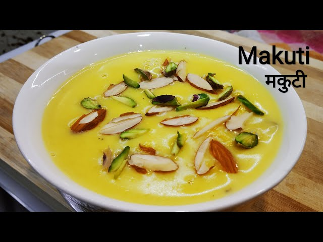

Makuti

Description
Makuti is a traditional sweet dish of Bihar. Bihari cuisine is a combination of Bhojpuri cuisine, Maithil cuisine and Magahi cuisine. The original version of makuti is prepared during Muslim marriages in Bihar, mostly in Patna. It is served in a special bowl called 'dhakni'. In the marriage dinners of Bihar, hundreds of these makuti filled dhaknis are arranged in a row on the tables for people, to have them dessert. You can find this dish on the streets of Bihar but it is really very difficult to find it anywhere else than Bihar. Vegans can also prepare this dessert using coconut oil.
Ingredients
- Moong dal - 30 gm
- Full fat Milk -1 litre
- Elaichi powder - 1/2 tsp
- Sugar- 150 gm
- Condensed Milk or Amul Mithai Mate - 200 ml
- Dry fruit flakes - 2 tsp
- Rose Water - 1 tbsp
- Mitha Atar - 3 drops
Steps
- Soak the moong dal for 30 minutes.
- Pressure cook it on a low flame for 10 minutes.
- Boil milk on a low flame till it becomes thick.
- Cook the boiled moong dal in milk till it's semi dry.
- Then add elaichi powder.
- Add the sugar and condensed milk and stir.
- Add roughly ground dry fruits and cook till it forms a thick paste.
- Then add rose water and mitha atar before removing from the fire.
- Put it in serving bowls and garnish it with dry fruit flakes.
- Let it cool and serve it chilled.